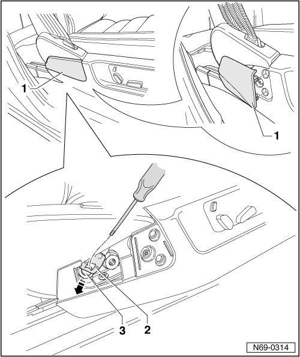
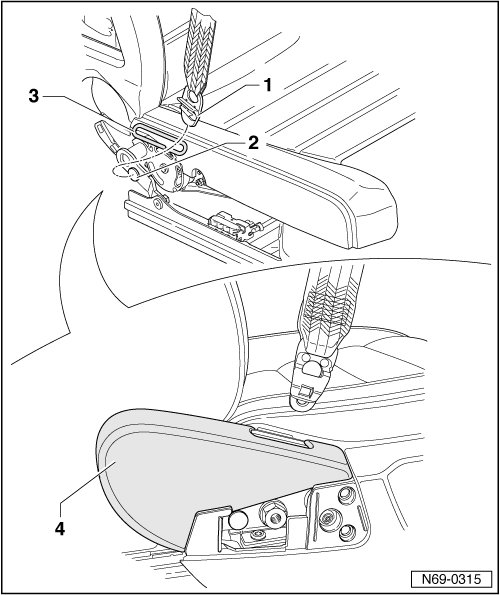
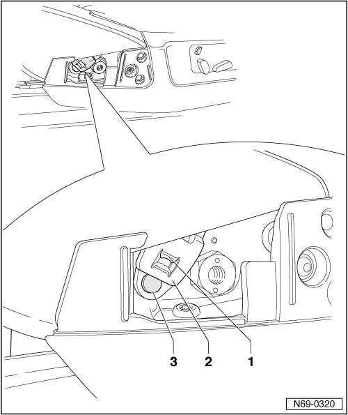

Belt Anchor
Belt Anchor
• Removal and installation is described for the right-hand side of the vehicle. Removal and installation for the left-hand side is performed in the same manner.
Removing
- Position seat into the front-most position via the fore/aft adjustment.
- Place belt height adjuster in center position.
- Remove belt cover - 1 -.
- Press securing spring - 2 - outward using screwdriver (max. 4 mm tip width).
- Press belt anchor down on T-pin - 3 - in direction of arrow to limit stop.

- Pull belt anchor - 1 - outward from T-pin on seat - 2 -.
- Guide belt anchor - 1 - through belt guide on seat frame - 3 -.
• It is not necessary to remove backrest trim - 4 - to perform this work on vehicles with electric seat adjusters.

Installing
- Perform the steps used for removal in reverse order.
- Before installing, ensure that tab - 1 - of securing spring - 2 - is completely engaged in T-pin of seat frame - 3 -.
CAUTION!
Tug on seat belt to ensure that seat belt is securely locked to seat frame.
